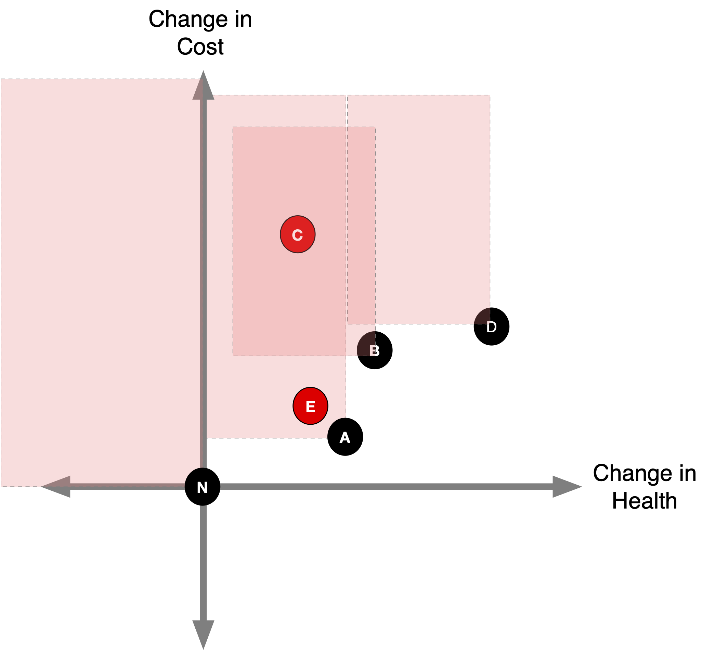

Incremental Cost-Effectiveness Analysis
Learning Objectives and Outline
Learning Objectives
Differentiate between average & incremental CEA ratios
Characterize decision problems by whether they are competing or non-competing
Compute and interpret ICERs
Practice ruling out “dominated” and “extendedly dominated” strategies
Identify “high-value” versus “low value” care strategies, based on generally accepted cost-effectiveness thresholds
Outline
- Review of CEA ratio
- Non-competing versus competing CEAs
- Incremental CEA
- Dominance & extended dominance
- Comparators
- CEA thresholds
Cost-Effectiveness Analysis
Cost-Effectiveness Analysis
Quantifies how to maximize the quality & quantity of life from among competing alternatives, given restricted resources
It’s an explicit measure of value for money
A POPULATION-LEVEL decision-making tool
Cost-Effectiveness Analysis IS NOT
- Indiscriminate cost-cutting
- Downsizing
- For individual-level decision making
- The only tool for decision-making
Cost-Effectiveness Analysis
Cost of Intervention
Cost of Alternative
Benefit of Intervention
Benefit of Alternative
Cost-Effectiveness Analysis
Cost of Intervention
Cost of Alternative
Benefit of Intervention
Benefit of Alternative
Cost-Effectiveness Ratio
Cost of Intervention
\quad - \quad
Cost of Alternative
\frac{\quad \quad \quad \quad \quad \quad \quad \quad \quad \quad \quad \quad \quad \quad \quad \quad}{\quad \quad \quad \quad \quad \quad \quad \quad \quad \quad \quad \quad \quad \quad \quad \quad}
Benefit of Intervention
\quad - \quad
Benefit of Alternative
Cost-Effectiveness Ratio
C_1
\quad - \quad
C_0
\frac{\quad \quad \quad \quad \quad \quad \quad \quad \quad \quad \quad \quad \quad \quad \quad \quad}{\quad \quad \quad \quad \quad \quad \quad \quad \quad \quad \quad \quad \quad \quad \quad \quad}
E_0
\quad - \quad
E_1
Cost-Effectiveness Ratio
\Delta C
\frac{\quad \quad \quad \quad }{\quad \quad \quad \quad \quad }
\Delta E
Incremental Cost-Effectiveness Ratio
Most often used, since for most conditions there is already some available treatment.
- C_1: net present value of total lifetime costs of new treatment
- C_0: net present value of total lifetime costs of default treatment
- E_1: effectiveness of new treatment, measured in expected life expectancy, quality-adjusted life years (QALYs) or disability-adjusted life years (DALYs), or some decision-relevant health outcome.
- E_0: effectiveness of default treatment
\frac{C_1 - C_0 \quad (\Delta C)}{E_1 - E_0 \quad (\Delta E)}
Neurologic Disease Decision Tree
Outcomes
- C_{treat} = expected cost of treat everyone strategy.
- C_{no treat} = expected cost of treat no one strategy.
- C_{biopsy} = expected cost of biopsy strategy.
Outcomes
- C_{treat} = expected cost of treat everyone strategy.
- C_{no treat} = expected cost of treat no one strategy.
- C_{biopsy} = expected cost of biopsy strategy.
- E_{treat} = expected life expectancy of treat everyone strategy.
- E_{no treat} = expected expectancy of treat no one strategy.
- E_{biopsy} = expected expectancy of biopsy strategy.
Outcomes in Amua

Treat All vs. Treat None
Strategy: Treat No One 
Treat All vs. Treat None
Strategy: Treat All
Key Takeaways (For Now)
- Treatment yields higher life expectancy for those with disease, but comes at a cost.
- Treatment yields lower life expectancy for those without the disease, and also comes at a cost.
- Biopsy can help balance these two outcomes by better targeting treatment, but also comes with costs and risks.
- Incremental CEA provides a transparent framework for quantifying and weighing these considerations.
Average Cost-Effectiveness Ratio
Special case where C_0 and E_0 are assumed to be zero.
- C_1: net present value of total lifetime costs of new treatment
- C_0: Assumed zero
- E_1: effectiveness of new treatment, measured in expected life expectancy, quality-adjusted life years (QALYs) or disability-adjusted life years (DALYs), or some decision-relevant health outcome.
- E_0: Assumed zero
\begin{aligned} ICER &= \frac{C_1 - 0}{E_1 - 0} \\ &= \frac{C_1}{E_1 } \end{aligned}
Non-Competing vs. Competing CEAs
Use of CEA in two situations
- Shopping Spree: Decision problem has non-competing programs/interventions.
- Each program is compared to a null alternative; therefore, you’re calculating an “average” cost-effectiveness ratio.
Use of CEA in two situations
- Competing Choice: Decision problem has competing programs/interventions for the same purpose; these choices are mutually exclusive.
- Two or more active alternatives in addition to the null option.
- You need to calculate an “incremental cost- effectiveness ratio”, which gives us the added cost per unit of added benefit of an option, relative to the next less expensive choice
Non-Competing (Shopping Spree) Decision Problem
How can we measure the relative priority of various health programs that compete for limited resources?
- Cardiovascular disease program
- Safe motherhood program
- HIV prevention initiative
- Child vaccination
- Depression screening
Assumptions
- Program alternatives are assumed to be independent
- Budget constraint is only limitation
- Neither the net cost nor the net effectiveness depend on what other programs are selected
- Programs are assumed to be divisible [programs can be partially implemented]
Objectives: Shopping Spree Problem
Maximize the total net effectiveness (health benefit) of the programs selected.
Stay within budget.
Shopping Spree Problem
Step 1: - Rule out programs that cost $ but have negative health effects
- Dominated by alternative of “no program”
Shopping Spree Problem
Step 2:
- Select programs that are cost-saving & offer benefit; net savings can also be added to budget
- Cost-saving compared to alternative of no program
Shopping Spree Problem
Step 3:
- Rank other programs in ascending order by their cost-effectiveness ratio (lowest to highest)
- Programs are then selected from the LEAST to the MOST expensive until the budget is expended
- Final array of programs selected will depend on the budget constraint
Shopping Spree Problem
Steps 1 & 2: Rule out dominated options & select cost-saving interventions
| Program | Cost | QALYs | Status |
|---|---|---|---|
| A | 27 | 30 | |
| B | 30 | 20 | |
| C | 56 | 70 | |
| D | 20 | 40 | |
| E | 30 | 50 | |
| F | 50 | 75 | |
| G | 40 | -30 | Ruled Out |
| H | -20 | 20 | Adopted |
Shopping Spree Problem
- Initial budget: $80
- Budget savings: $20.
- Total budget: $80 + $20 = $100
| Program | Cost | QALYs | Status |
|---|---|---|---|
| A | 27 | 30 | |
| B | 30 | 20 | |
| C | 56 | 70 | |
| D | 20 | 40 | |
| E | 30 | 50 | |
| F | 50 | 75 | |
| G | 40 | -30 | Ruled Out |
| H | -20 | 20 | Adopted |
Shopping Spree Problem
- Calculate average cost-effectiveness ratio.
| Program | Cost | QALYs | C/E |
|---|---|---|---|
| A | 27 | 30 | 0.90 |
| B | 30 | 20 | 1.50 |
| C | 56 | 70 | 0.80 |
| D | 20 | 40 | 0.50 |
| E | 30 | 50 | 0.60 |
| F | 50 | 75 | 0.67 |
Shopping Spree Problem
- Calculate average cost-effectiveness ratio.
- Sort (by C/E) in ascending order .
| Program | Cost | QALYs | C/E |
|---|---|---|---|
| D | 20 | 40 | 0.50 |
| E | 30 | 50 | 0.60 |
| F | 50 | 75 | 0.67 |
| C | 56 | 70 | 0.80 |
| A | 27 | 30 | 0.90 |
| B | 30 | 20 | 1.50 |
Shopping Spree Problem
- Calculate cumulative costs
- Determine what is adoptable based on global budget constraint ($100)
- Calculate cumulative effects (QALYs)
Shopping Spree Problem
Budget: $100
| Program | Cost | QALYs | C/E | Cumulative Cost | Cumulative QALYs |
|---|---|---|---|---|---|
| D | 20 | 40 | 0.50 | 20 | 40 |
| E | 30 | 50 | 0.60 | 50 | 90 |
| F | 50 | 75 | 0.67 | 100 | 165 |
| C | 56 | 70 | 0.80 | 156 | 235 |
| A | 27 | 30 | 0.90 | 183 | 265 |
| B | 30 | 20 | 1.50 | 213 | 285 |
Shopping Spree Problem
Budget: $100
| Program | Cost | QALYs | C/E | Cumulative Cost | Cumulative QALYs |
|---|---|---|---|---|---|
| D | 20 | 40 | 0.50 | 20 | 40 |
| E | 30 | 50 | 0.60 | 50 | 90 |
| F | 50 | 75 | 0.67 | 100 | 165 |
| C | 56 | 70 | 0.80 | 156 | 235 |
| A | 27 | 30 | 0.90 | 183 | 265 |
| B | 30 | 20 | 1.50 | 213 | 285 |
| Budget | Adopted | Effect | Threshold |
|---|---|---|---|
| 100 | D, E, F, H | 165 | 0.67 |
Shopping Spree Problem
Budget: $150
| Program | Cost | QALYs | C/E | Cumulative Cost | Cumulative QALYs |
|---|---|---|---|---|---|
| D | 20 | 40 | 0.50 | 20 | 40 |
| E | 30 | 50 | 0.60 | 50 | 90 |
| F | 50 | 75 | 0.67 | 100 | 165 |
| C | 56 | 70 | 0.80 | 156 | 235 |
| A | 27 | 30 | 0.90 | 183 | 265 |
| B | 30 | 20 | 1.50 | 213 | 285 |
| Budget | Adopted | Cost | Effect | Threshold | Remaining |
|---|---|---|---|---|---|
| 150 | D, E, F, H | 100 | 165 | 0.67 | 50 |
Shopping Spree Problem
Budget: $150
| Program | Cost | QALYs | C/E | Cumulative Cost | Cumulative QALYs |
|---|---|---|---|---|---|
| D | 20 | 40 | 0.50 | 20 | 40 |
| E | 30 | 50 | 0.60 | 50 | 90 |
| F | 50 | 75 | 0.67 | 100 | 165 |
| C | 56 | 70 | 0.80 | 156 | 235 |
| A | 27 | 30 | 0.90 | 183 | 265 |
| B | 30 | 20 | 1.50 | 213 | 285 |
| Budget | Adopted | Cost | Effect | Threshold | Remaining |
|---|---|---|---|---|---|
| 150 | D, E, F, H | 100 | 165 | 0.67 | 50 |
Shopping Spree Problem
Budget: $150
| Program | Cost | QALYs | C/E | Cumulative Cost | Cumulative QALYs |
|---|---|---|---|---|---|
| D | 20 | 40 | 0.50 | 20 | 40 |
| E | 30 | 50 | 0.60 | 50 | 90 |
| F | 50 | 75 | 0.67 | 100 | 165 |
| C (89.3%) | 56 | 70 | 0.80 | 156 | 235 |
| A | 27 | 30 | 0.90 | 183 | 265 |
| B | 30 | 20 | 1.50 | 213 | 285 |
| Budget | Adopted | Cost | Effect | Threshold | Remaining |
|---|---|---|---|---|---|
| 150 | D, E, F, C (89.3%), H | 150 | 226.6 | 0.8 | 0 |
- $50 left but program C costs $56 (50/56 = 0.89)
- 0.89*70 QALYs of program C = 62.3 QALYs
Summary: Shopping Spree Problem
Maximize the total net effectiveness (health benefit)
Stay within budget
Can do the same with other objectives (e.g., Minimize costs, subject decision to ‘minimum benefit’ constraint, etc.)
Use of CEA in two situations
- Shopping Spree: Decision problem has non-competing programs/interventions.
Use of CEA in two situations
- Competing Choice: Decision problem has competing programs/interventions for the same purpose; these choices are mutually exclusive.
Objectives: Competing Choice Problem
Cannot implement more than one strategy at a time.
Incremental cost-effectiveness ratio is below a pre-specified adoption threshold.
What’s different?
Shopping Spree
- Can select multiple programs
- Different costs & effects associated with each
- Requires calculation of an Average Cost-Effectiveness Ratio
Competing Choice
- Programs are mutually exclusive.
- Different costs & effects associated with each.
- Requires calculation of an Incremental Cost-Effectiveness Ratio (ICER)
Incremental CEA
1. Incremental CEA in Pictures
1. Calculate incremental costs and effects
- Often, a strategy capturing current practice (‘status-quo’, ‘do nothing’, ‘natural history’) is defined.
- Costs and effects are then calculated for each strategy relative to the status-quo.
- Plot the difference in costs and effects with health effects on x-axis and cost effects on y-axis.
1. Calculate cost and effects

Identify Dominated Strategies
- We can rule out any strategies that result in less health at higher cost.
Identify Dominated Strategies

Identify Dominated Strategies
- We can also rule out strategies where some other competing strategy results in more (or equal) health at lower (or equal) cost.
- This is known as “strong” dominance.
Identify Dominated Strategies

Identify Dominated Strategies
What about strategy B?

Hybrid Strategies
- Suppose it is feasible to partially implement strategies A and D.
- For example, we could implement A for 90% of the population and D for 10% of the population, or vice versa.
90% A, 10% D

10% A, 90% D
50% A, 50% D
- Can we make any statements about B now?
Extended (Weak) Dominance
- B is ruled out by extended (“weak”) dominance.

Extended (Weak) Dominance
Efficiency Frontier
- The efficiency frontier is the set of non-dominated strategies.
ICERs
- The slope of a line connecting two points is the incremental cost-effectiveness ratio comparing those strategies. More on this later!

2. Incremental CEA in Tables
Incremental CEA
Please note that the following example uses different strategies and values than the example used in the previous pictures!
Incremental CEA
Calculate costs and effects for each strategy.
Sort table by costs in ascending order.1
Calculate ICER based on difference in costs and effects.
Determine dominated strategies (ICER<0).
Re-calculate ICERs after eliminating dominated strategies.
Determine strategies ruled out by extended dominance.
Re-calculate ICERs after ruling out all dominated strategies.
Repeat 5-7 as needed.
Incremental CEA
1. Calculate costs and effects for each strategy.
| Strategy | Cost | QALYs |
|---|---|---|
| A | 16,454 | 17.33 |
| D | 24,504 | 17.49 |
| C | 33,443 | 17.58 |
| B | 21,457 | 17.41 |
| E | 43,332 | 17.49 |
Incremental CEA
- Calculate costs and effects for each strategy.
2. Sort table by costs in ascending order.1
| Strategy | Cost | QALYs |
|---|---|---|
| A | 16,454 | 17.332 |
| B | 21,457 | 17.409 |
| D | 24,504 | 17.491 |
| C | 33,443 | 17.580 |
| E | 43,332 | 17.491 |
Incremental CEA
Calculate costs and effects for each strategy.
Sort table by costs in ascending order.1
3. Calculate ICER based on difference in costs and effects.
| Strategy | Cost | dCost | QALYs | dQALYs | ICER |
|---|---|---|---|---|---|
| A | 16,454 | 17.332 | |||
| B | 21,457 | 5,003 | 17.409 | 0.077 | 64,895 |
| D | 24,504 | 3,048 | 17.491 | 0.082 | 36,989 |
| C | 33,443 | 8,939 | 17.580 | 0.088 | 101,292 |
| E | 43,332 | 9,888 | 17.491 | -0.088 | -112,048 |
Incremental CEA
Calculate costs and effects for each strategy.
Sort table by costs in ascending order.1
Calculate ICER based on difference in costs and effects.
4. Determine dominated strategies (ICER<0)
Determining Dominated Strategies
- Let’s take a look at our table.
- Notice that strategy E has a negative ICER. Why is this?
- Strategy E raises costs but lowers QALYs.
- Therefore, we’d be better off by selecting strategy C (we would get more health gain for less money…)
| Strategy | Cost | dCost | QALYs | dQALYs | ICER | |
|---|---|---|---|---|---|---|
| A | 16,454 | 17.332 | ||||
| B | 21,457 | 5,003 | 17.409 | 0.077 | 64,895 | |
| D | 24,504 | 3,048 | 17.491 | 0.082 | 36,989 | |
| C | 33,443 | 8,939 | 17.580 | 0.088 | 101,292 | |
| E | 43,332 | 9,888 | 17.491 | -0.088 | -112,048 |
Determining Dominated Strategies
- Strong dominance refers to situations where one strategy is preferred over another on both costs and health effects (e.g., QALYs).
- When we identify a strongly dominated option, we remove it from the table and re-calculate ICERS based on the remaining strategies.
| Strategy | Cost | dCost | QALYs | dQALYs | ICER | |
|---|---|---|---|---|---|---|
| A | 16,454 | 17.332 | ||||
| B | 21,457 | 5,003 | 17.409 | 0.077 | 64,895 | |
| D | 24,504 | 3,048 | 17.491 | 0.082 | 36,989 | |
| C | 33,443 | 8,939 | 17.580 | 0.088 | 101,292 | |
| E | 43,332 | 9,888 | 17.491 | -0.088 | -112,048 | Dominated |
A Brief Aside on Negative ICERs
- We want to rule out strategies that cost more but result in less health.
- This implies a negative ICER.
- But what other scenario would result in a negative ICER?
- Strategy adds health but reduces costs.
- This is a great strategy!
Both Strategies Have a Negative ICER

A Brief Aside on Negative ICERs
- For this reason, it is poor practice to report negative ICERs.
- Be careful when deleting a strategy becuase it has a negative ICER!
- It may be a great strategy!
Incremental CEA
Calculate costs and effects for each strategy.
Sort table by costs in ascending order.1
Calculate ICER based on difference in costs and effects.
4. Determine dominated strategies (ICER<0)
| Strategy | Cost | dCost | QALYs | dQALYs | ICER | |
|---|---|---|---|---|---|---|
| A | 16,454 | 17.332 | ||||
| B | 21,457 | 5,003 | 17.409 | 0.077 | 64,895 | |
| D | 24,504 | 3,048 | 17.491 | 0.082 | 36,989 | |
| C | 33,443 | 8,939 | 17.580 | 0.088 | 101,292 | |
| E | 43,332 | 9,888 | 17.491 | -0.088 | -112,048 | Dominated |
Incremental CEA
Calculate costs and effects for each strategy.
Sort table by costs in ascending order.1
Calculate ICER based on difference in costs and effects.
- Determine dominated strategies (ICER<0).
5. Re-calculate ICERs after eliminating dominated strategies.
| Strategy | Cost | dCost | QALYs | dQALYs | ICER | |
|---|---|---|---|---|---|---|
| A | 16,454 | 17.332 | ||||
| B | 21,457 | 5,003 | 17.409 | 0.077 | 64,895 | |
| D | 24,504 | 3,048 | 17.491 | 0.082 | 36,989 | |
| C | 33,443 | 8,939 | 17.580 | 0.088 | 101,292 | |
| E | 43,332 | 17.491 | -112,048 | Dominated |
Incremental CEA
Calculate costs and effects for each strategy.
Sort table by costs in ascending order.1
Calculate ICER based on difference in costs and effects.
Determine dominated strategies (ICER<0).
Re-calculate ICERs after eliminating dominated strategies.
| Strategy | Cost | dCost | QALYs | dQALYs | ICER | |
|---|---|---|---|---|---|---|
| A | 16,454 | 17.332 | ||||
| B | 21,457 | 5,003 | 17.409 | 0.077 | 64,895 | |
| D | 24,504 | 3,048 | 17.491 | 0.082 | 36,989 | |
| C | 33,443 | 8,939 | 17.580 | 0.088 | 101,292 | |
| E | 43,332 | 17.491 |
Determining Dominated Strategies
- We’re not quite done yet
- Notice something odd about strategy B?
- Its ICER is higher than the next most costly alternative (strategy D)
| Strategy | Cost | dCost | QALYs | dQALYs | ICER | |
|---|---|---|---|---|---|---|
| A | 16,454 | 17.332 | ||||
| B | 21,457 | 5,003 | 17.409 | 0.077 | 64,895 | |
| D | 24,504 | 3,048 | 17.491 | 0.082 | 36,989 | |
| C | 33,443 | 8,939 | 17.580 | 0.088 | 101,292 | |
| E | 43,332 | 17.491 |
Determining Dominated Strategies
- A telltale sign of extended dominance in a (sorted) CEA table is a strategy with a higher ICER than the next most expensive option.
| Strategy | Cost | dCost | QALYs | dQALYs | ICER | |
|---|---|---|---|---|---|---|
| A | 16,454 | 17.332 | ||||
| B | 21,457 | 5,003 | 17.409 | 0.077 | 64,895 | Dominated (Extended) |
| D | 24,504 | 3,048 | 17.491 | 0.082 | 36,989 | |
| C | 33,443 | 8,939 | 17.580 | 0.088 | 101,292 | |
| E | 43,332 | 17.491 | Dominated |
Determining Dominated Strategies
- You can see this in the pictures as well ….

Incremental CEA
Calculate costs and effects for each strategy.
Sort table by costs in ascending order.1
Calculate ICER based on difference in costs and effects.
Determine dominated strategies (ICER<0).
Re-calculate ICERs after eliminating dominated strategies.
6. Determine strategies ruled out by extended dominance.
| Strategy | Cost | dCost | QALYs | dQALYs | ICER | |
|---|---|---|---|---|---|---|
| A | 16,454 | 17.332 | ||||
| B | 21,457 | 5,003 | 17.409 | 0.077 | 64,895 | Dominated (Extended) |
| D | 24,504 | 3,048 | 17.491 | 0.082 | 36,989 | |
| C | 33,443 | 8,939 | 17.580 | 0.088 | 101,292 | |
| E | 43,332 | 17.491 | Dominated |
Incremental CEA
7. Re-calculate ICERs after ruling out all dominated strategies.
| Strategy | Cost | dCost | QALYs | dQALYs | ICER | |
|---|---|---|---|---|---|---|
| A | 16,454 | 17.332 | ||||
| D | 24,504 | 8,050 | 17.491 | 0.159 | 50,478 | |
| C | 33,443 | 8,939 | 17.580 | 0.088 | 101,292 | |
| E | 43,332 | 17.491 | Dominated | |||
| B | 21,457 | 17.409 | Dominated (Extended) |
- Strategy D is more expensive than Strategy B, but Strategy D is gaining health MORE EFFICIENTLY than Strategy B
In-class practice: DALYs
Nine different prophylaxis to prevent someone with HIV from acquiring opportunistic infections related to AIDS
| Strategy | Cost | DALYs |
|---|---|---|
| No prophylaxis | 40,288 | 9.50 |
| TMP-SMX | 44,786 | 6.94 |
| TMP-SMX, azithromycin | 45,944 | 6.46 |
| TMP-SMX, fluconazole | 47,046 | 6.49 |
| TMP-SMX, azithromycin, fluconazole | 48,596 | 5.90 |
| TMP-SMX, ganciclovir | 54,628 | 6.30 |
| TMP-SMX, azithromycin, ganciclovir | 56,812 | 5.67 |
| TMP-SMX, fluconazole, ganciclovir | 58,082 | 5.70 |
| TMP-SMX, azithromycin, fluconazole, ganciclovir | 61,119 | 4.88 |
Calculate Incremental Costs and DALYs Averted
| Strategy | Cost | Incremental Cost | DALYs | DALYs Averted |
|---|---|---|---|---|
| No prophylaxis | 40,288 | 0 | 9.50 | 0.00 |
| TMP-SMX | 44,786 | 4,498 | 6.94 | 2.56 |
| TMP-SMX, azithromycin | 45,944 | 1,158 | 6.46 | 0.48 |
| TMP-SMX, fluconazole | 47,046 | 1,102 | 6.49 | -0.03 |
| TMP-SMX, azithromycin, fluconazole | 48,596 | 1,550 | 5.90 | 0.59 |
| TMP-SMX, ganciclovir | 54,628 | 6,032 | 6.30 | -0.40 |
| TMP-SMX, azithromycin, ganciclovir | 56,812 | 2,184 | 5.67 | 0.63 |
| TMP-SMX, fluconazole, ganciclovir | 58,082 | 1,270 | 5.70 | -0.03 |
| TMP-SMX, azithromycin, fluconazole, ganciclovir | 61,119 | 3,037 | 4.88 | 0.82 |
Calculate incremental costs per DALY averted.
| Strategy | Incremental Cost | DALYs Averted | Incremental Cost per DALY Averted |
|---|---|---|---|
| No prophylaxis | 0 | 0.00 | |
| TMP-SMX | 4,498 | 2.56 | 1,757 |
| TMP-SMX, azithromycin | 1,158 | 0.48 | 2,413 |
| TMP-SMX, fluconazole | 1,102 | -0.03 | -36,733 |
| TMP-SMX, azithromycin, fluconazole | 1,550 | 0.59 | 2,627 |
| TMP-SMX, ganciclovir | 6,032 | -0.40 | -15,080 |
| TMP-SMX, azithromycin, ganciclovir | 2,184 | 0.63 | 3,467 |
| TMP-SMX, fluconazole, ganciclovir | 1,270 | -0.03 | -42,333 |
| TMP-SMX, azithromycin, fluconazole, ganciclovir | 3,037 | 0.82 | 3,704 |
Determine dominated strategies
| Strategy | Incremental Cost | DALYs Averted | Incremental Cost per DALY Averted | Status |
|---|---|---|---|---|
| No prophylaxis | 0 | 0.00 | ||
| TMP-SMX | 4,498 | 2.56 | 1,757 | |
| TMP-SMX, azithromycin | 1,158 | 0.48 | 2,413 | |
| TMP-SMX, fluconazole | 1,102 | -0.03 | -36,733 | Dominated (Strong) |
| TMP-SMX, azithromycin, fluconazole | 1,550 | 0.59 | 2,627 | |
| TMP-SMX, ganciclovir | 6,032 | -0.40 | -15,080 | Dominated (Strong) |
| TMP-SMX, azithromycin, ganciclovir | 2,184 | 0.63 | 3,467 | |
| TMP-SMX, fluconazole, ganciclovir | 1,270 | -0.03 | -42,333 | Dominated (Strong) |
| TMP-SMX, azithromycin, fluconazole, ganciclovir | 3,037 | 0.82 | 3,704 |
Remove dominated strategies and recalculate
Determine dominated strategies
| Strategy | Cost | Incremental Cost | DALYs | DALYs Averted |
|---|---|---|---|---|
| No prophylaxis | 40,288 | 0 | 9.50 | 0.00 |
| TMP-SMX | 44,786 | 4,498 | 6.94 | 2.56 |
| TMP-SMX, azithromycin | 45,944 | 1,158 | 6.46 | 0.48 |
| TMP-SMX, azithromycin, fluconazole | 48,596 | 2,652 | 5.90 | 0.56 |
| TMP-SMX, azithromycin, ganciclovir | 56,812 | 8,216 | 5.67 | 0.23 |
| TMP-SMX, azithromycin, fluconazole, ganciclovir | 61,119 | 4,307 | 4.88 | 0.79 |
Determine dominated strategies
| Strategy | Incremental Cost | DALYs Averted | Incremental Cost per DALY Averted | Status |
|---|---|---|---|---|
| No prophylaxis | 0 | 0.00 | ||
| TMP-SMX | 4,498 | 2.56 | 1,757 | |
| TMP-SMX, azithromycin | 1,158 | 0.48 | 2,413 | |
| TMP-SMX, azithromycin, fluconazole | 2,652 | 0.56 | 4,736 | |
| TMP-SMX, azithromycin, ganciclovir | 8,216 | 0.23 | 35,722 | Dominated (Extended) |
| TMP-SMX, azithromycin, fluconazole, ganciclovir | 4,307 | 0.79 | 5,452 |
Remove dominated strategies and recalculate
Determine dominated strategies
Determine dominated strategies
| Strategy | Cost | Incremental Cost | DALYs | DALYs Averted |
|---|---|---|---|---|
| No prophylaxis | 40,288 | 0 | 9.50 | 0.00 |
| TMP-SMX | 44,786 | 4,498 | 6.94 | 2.56 |
| TMP-SMX, azithromycin | 45,944 | 1,158 | 6.46 | 0.48 |
| TMP-SMX, azithromycin, fluconazole | 48,596 | 2,652 | 5.90 | 0.56 |
| TMP-SMX, azithromycin, fluconazole, ganciclovir | 61,119 | 12,523 | 4.88 | 1.02 |
Determine dominated strategies
| Strategy | Incremental Cost | DALYs Averted | Incremental Cost per DALY Averted | Status |
|---|---|---|---|---|
| No prophylaxis | 0 | 0.00 | ||
| TMP-SMX | 4,498 | 2.56 | 1,757 | |
| TMP-SMX, azithromycin | 1,158 | 0.48 | 2,413 | |
| TMP-SMX, azithromycin, fluconazole | 2,652 | 0.56 | 4,736 | |
| TMP-SMX, azithromycin, fluconazole, ganciclovir | 12,523 | 1.02 | 12,277 |
Final Table
| Strategy | Incremental Cost | DALYs Averted | Incremental Cost per DALY Averted | Status |
|---|---|---|---|---|
| No prophylaxis | 0 | 0.00 | ||
| TMP-SMX | 4,498 | 2.56 | 1,757 | |
| TMP-SMX, azithromycin | 1,158 | 0.48 | 2,413 | |
| TMP-SMX, azithromycin, fluconazole | 2,652 | 0.56 | 4,736 | |
| TMP-SMX, azithromycin, fluconazole, ganciclovir | 12,523 | 1.02 | 12,277 | |
| TMP-SMX, fluconazole | 1,102 | -0.03 | Dominated (Strong) | |
| TMP-SMX, ganciclovir | 6,032 | -0.40 | Dominated (Strong) | |
| TMP-SMX, fluconazole, ganciclovir | 1,270 | -0.03 | Dominated (Strong) | |
| TMP-SMX, azithromycin, ganciclovir | 8,216 | 0.23 | Dominated (Extended) |
A note on COMPARATORS
A note on COMPARATORS
Where to draw the line?
CEA Thresholds
- So now we have our ICERs, but how do we make a decision?
- We must define a threshold (\lambda), or an ICER value that determines whether or not we implement a given strategy.
- Also known as “willingness-to-pay” (WTP) threshold.
CEA Thresholds
What are common thresholds and how are they determined?
- In high income countries, common thresholds are $50,000/QALY, $100,000/QALY, and $100,000/QALY.
- In LMICs, 0.5-3x per capita gross domestic product (GDP) per DALY averted.
- More on this in a few minutes.
How do CEA Thresholds Guide Decisionmaking?

How do CEA Thresholds Guide Decisionmaking?

How do CEA Thresholds Guide Decisionmaking?

CEA Thresholds
CEA Thresholds
CEA Thresholds
CEA Thresholds

Different ways thresholds have been estimated: - “supply-side” (UK & Europe) - “demand-side” (US) - per capita consumption (US/LMICs)
Opportunity cost (“supply-side”)
Decision should be informed by the value of what will be given up as a consequence of those cost.
- Known as the “opportunity cost.”
If resources are committed to the funding of one intervention, then they are not available to fund and deliver others (shopping spree concept)
The opportunity cost of a commitment of resources is the health forgone because these “other” interventions that are available to the health system cannot be delivered.
Source: See K Claxton on the estimation of the NICE threshold in the UK / Woods et al, & others
Opportunity cost (“supply-side”)

Opportunity cost (“supply-side”)
If you don’t consider the budget under which you are operating, then some medications could take up half the budget and displace interventions that produce significant health gain OR in the US, could increase premiums or take away $$ from other sectors
Academics have argued that the threshold should be lower/on the more conservative end for higher priced therapies (NICE uses a budget impact threshold of 20,000 GBP/QALY for these higher priced therapies as opposed to 30,000 GBP/QALY for others)
Willingness to pay (“demand-side”)

CEA Thresholds in LMICs

CEA Thresholds in LMICs
- Past WHO guidelines recommended countries use following guidelines: An intervention is cost-effective if cost/DALY averted is less than 1-3X per capita GDP of country
- Some have argued the WHO’s guidelines may be too high and result in adoption of interventions that displace existing services that provide greater health benefit.
- Suggest 0.5 GDPpc is a more appropriate benchmark for low-income countries and 0.71 GDPpc for middle-income countries (see Woods et al 2016)
CEA Thresholds in LMICs
HIV Example From Earlier
| Strategy | Incremental Cost | DALYs Averted | Incremental Cost per DALY Averted | Status |
|---|---|---|---|---|
| No prophylaxis | 0 | 0.00 | ||
| TMP-SMX | 4,498 | 2.56 | 1,757 | |
| TMP-SMX, azithromycin | 1,158 | 0.48 | 2,413 | |
| TMP-SMX, azithromycin, fluconazole | 2,652 | 0.56 | 4,736 | |
| TMP-SMX, azithromycin, fluconazole, ganciclovir | 12,523 | 1.02 | 12,277 | |
| TMP-SMX, fluconazole | 1,102 | -0.03 | Dominated (Strong) | |
| TMP-SMX, ganciclovir | 6,032 | -0.40 | Dominated (Strong) | |
| TMP-SMX, fluconazole, ganciclovir | 1,270 | -0.03 | Dominated (Strong) | |
| TMP-SMX, azithromycin, ganciclovir | 8,216 | 0.23 | Dominated (Extended) |
HIV Example from Earlier
- If our CE threshold was 2x GDP (GDP = $2,500), which option would we choose as decision makers?
- If our CE threshold was 1x GDP (GDP = $2,500), which option would we choose as decision makers?